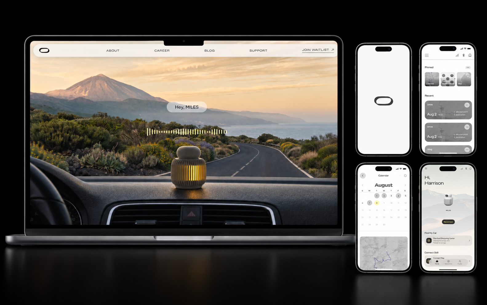
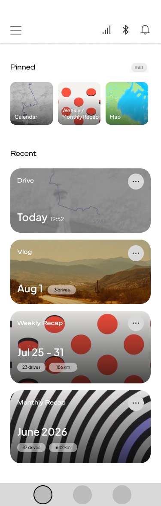

Recent first. The full archive nearby.
Home focuses on recent memories so the first view stays useful. Calendar, Map, and Recap provide ways to browse beyond the latest moments.
2026 · Ongoing · Lead UX
Waybox connects an AI-driven device with an app for revisiting everyday memories. I lead UX across the live website and the app, contributing to the website’s UI while designing the app’s flows and interfaces.

The website is live. The connected app is still in design; its flows and screens are not presented here as a shipped product.
I lead UX for the website and app, contributed to parts of the website UI, and lead app interface design from client requirements through flows, architecture, wireframes, and high-fidelity screens.
I review the app’s flows and screens with the client, then refine interactions and interface specifications from stakeholder feedback.
01 / The user journey
This case follows one path through onboarding, device setup, and everyday memories. Device installation can happen later, so first use does not depend on being in the car.
Introduce the app and the device before asking for setup decisions.
Connect by Bluetooth at home or leave device setup for later.
Show a Home experience that matches whether a device is connected.
Complete physical installation when the user is ready.
Return to Home for the latest moments, with deeper browsing available through Calendar, Map, and Recap.
The connection prompt, Bluetooth step, and success state show how setup can start before car installation.
Installation has a “Do this later” path. The connected Home design shows the available device controls.
The introduction previews recent memories and weekly recaps. The Memory screen brings Calendar, Map, and Recap shortcuts together with the latest captured moments.


02 / Interaction decisions
Home focuses on recent memories so the first view stays useful. Calendar, Map, and Recap provide ways to browse beyond the latest moments.
Bluetooth connection can happen before car installation, making it easier to try the app’s connected experience without completing every physical setup step at once.
Connected and unconnected Home states present different available functions, so the interface reflects what the user can do in each situation.
03 / Collaboration & next validation
I review flows and high-fidelity screens with the client, then refine interaction details and state specifications based on their feedback. Next, I will complete the remaining high-fidelity screens and interaction details, then QA the full flow, including exception states.